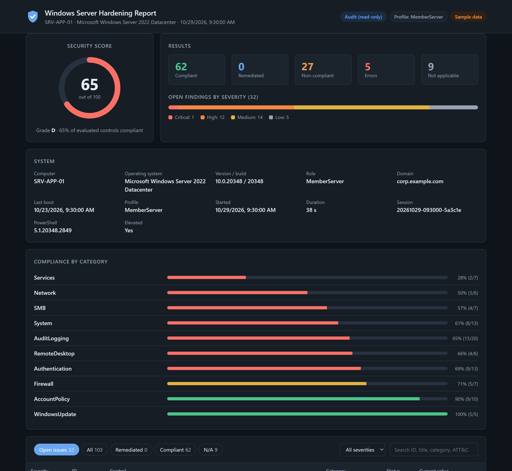
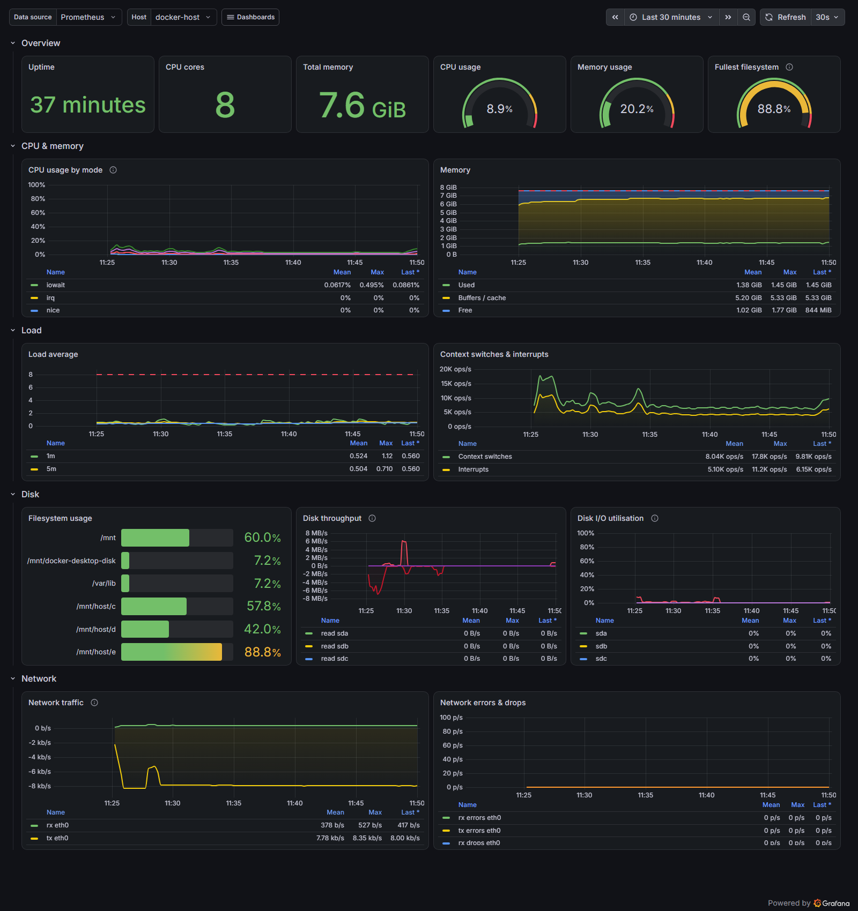

Windows Server & Active Directory
AD DS, Group Policy and OUs, DNS and DHCP, file and print servers with NTFS permissions, set up cleanly and kept documented.
I'm an IT Infrastructure Engineer
I work on the server and network side: Windows Server, Active Directory, Cisco networks, VMware, VoIP and data-center monitoring, on-site, every day. With a BS in Computer Science, I also automate and code the parts that shouldn't be done by hand.
Technologies I work with
role: IT Infrastructure Engineer
focus: [servers, networks, automation]
daily: [Windows Server, AD, Cisco, VMware]
also_codes: [C#, .NET, SQL, Go]
open_to: [on-site, remote]About me
I'm the person people call when something stops working. At my current job I look after the servers, network devices and end-user systems of an enterprise environment in Karachi: Active Directory and Group Policy, DNS and DHCP, file servers and permissions, Cisco switching and routing, Grandstream VoIP, and Vutlan monitoring for the server room and data-center equipment.
My Computer Science degree means I don't stop at fixing things by hand. I harden Windows servers with PowerShell, configure Linux with Ansible, describe cloud infrastructure in Terraform, monitor it all with Prometheus and Grafana, and build software when a team needs it, like an HR and attendance platform in .NET Blazor and SQL Server.
What I do
AD DS, Group Policy and OUs, DNS and DHCP, file and print servers with NTFS permissions, set up cleanly and kept documented.
Cisco routing and switching, VLANs, VPN, NAT and subnetting, pfSense firewalls, and fault-finding with Wireshark.
Grandstream UCM IP PBX (extensions and SIP accounts) and Vutlan monitoring for server rooms and data-center equipment.
Windows Server hardened against CIS-mapped controls with preview and one-command rollback; Linux hardened with idempotent Ansible roles.
PowerShell, Ansible and Terraform with GitHub Actions, so servers and cloud environments are built the same way every time.
Business apps in C#, .NET Blazor, EF Core and SQL Server, and command-line tools in Go.
How I work
Find out what's running, what depends on it and what's at risk.
Agree on the change, the maintenance window and the way back.
Make the change, and script it if it will ever happen again.
Test it, watch the monitoring, and confirm with the people affected.
Write it down, so the next person doesn't have to guess.
Experience
R&I Electrical Appliances (Pvt.) Ltd. · Karachi
R&I Electrical Appliances (Pvt.) Ltd. · Karachi
Iqra University · Karachi
Coursework in computer networks, operating systems, cloud computing, cyber security, database systems, software engineering, IT infrastructure and virtualization.
Featured projects

Windows · Security
A PowerShell module that audits, hardens and rolls back Windows Server security settings, with HTML, JSON and CSV reports. Changes are previewed before they happen and verified after.

Observability
One-command Prometheus, Grafana and Alertmanager for Docker hosts. Every alert has a unit test and a runbook, and CI starts the whole stack and smoke-tests it.
# firewall before sshd: a new SSH port
# must be open before sshd moves to it
- role: firewall
tags: [firewall, security]
- role: sshd
tags: [ssh, security]
- role: fail2banLinux · Automation
Ansible roles that turn a fresh Ubuntu, Debian or RHEL-family server into a hardened, monitored host, with checks that stop a bad variable from locking you out.
module "vpc" {
source = "./modules/vpc"
vpc_cidr = var.vpc_cidr
azs = local.azs
nat_gateway_mode = var.nat_gateway_mode
kms_key_arn = module.kms.key_arn
}Cloud · IaC
A highly available web tier on AWS: load balancer behind WAF, auto-scaling instances with no SSH, KMS and CloudWatch alarms, deployed by a keyless OIDC pipeline.
$ envy init
$ envy set DATABASE_URL
$ envy list -e production
$ envy run -- npm run dev
# secrets injected into the processPrivate · In development
HR, attendance and leave management with role-based access, built on Clean Architecture with unit-tested attendance and leave engines.
Skills & tools
Let's work together
I'm open to full-time on-site and remote roles, and to remote contracts. Send me a short note about the role or the problem, and I'll reply with how I'd approach it.